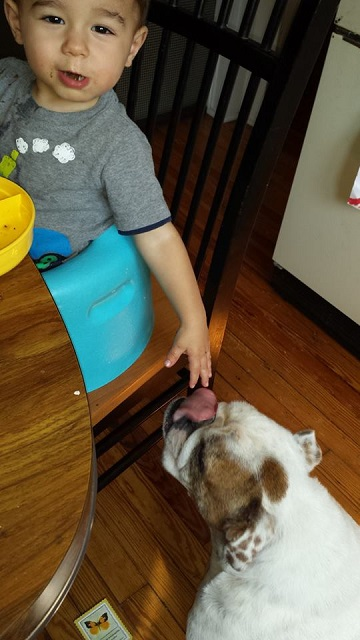
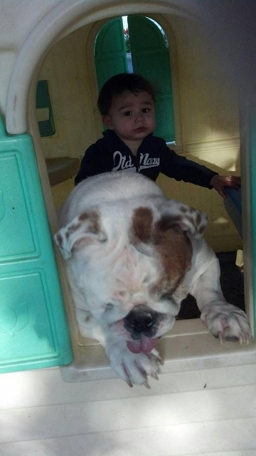
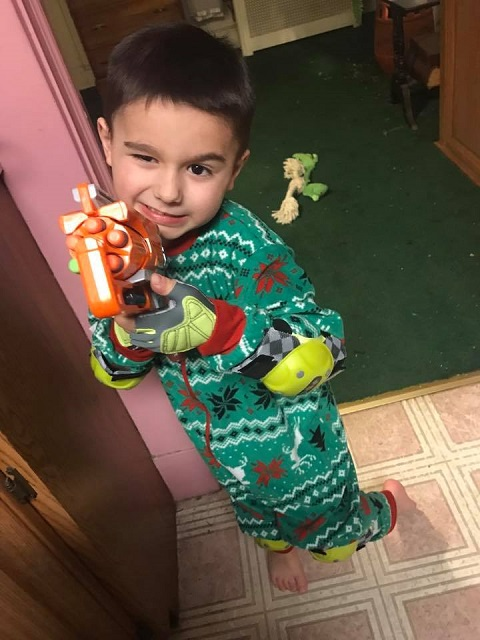
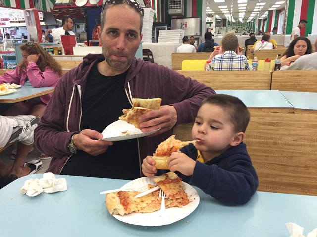
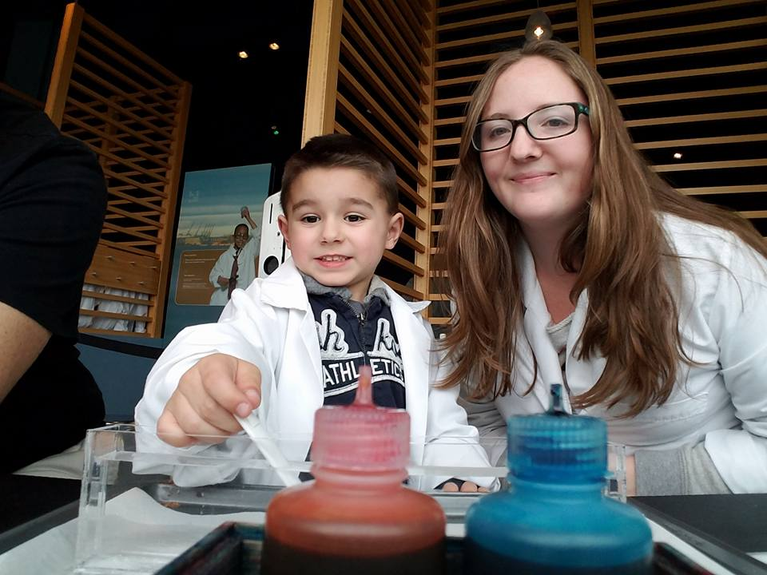
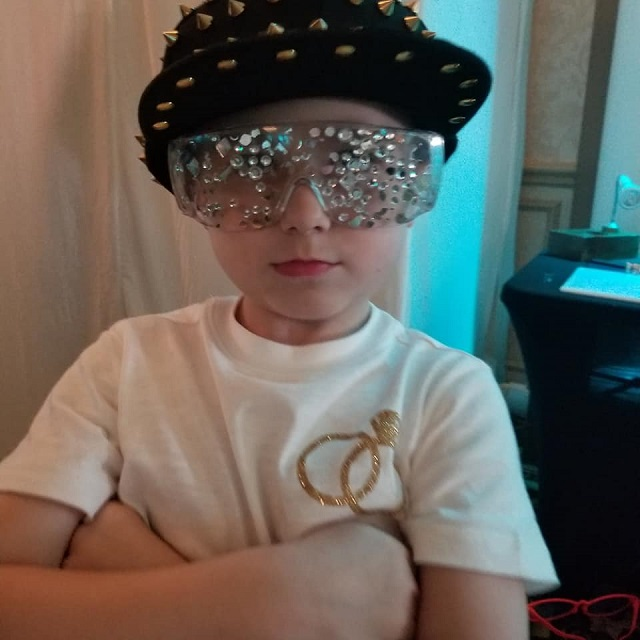
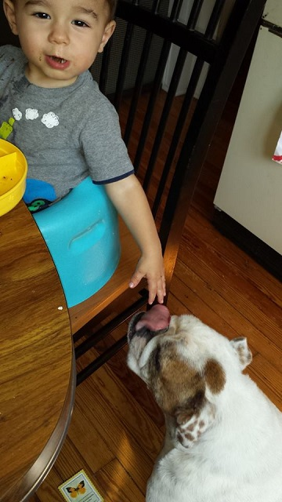
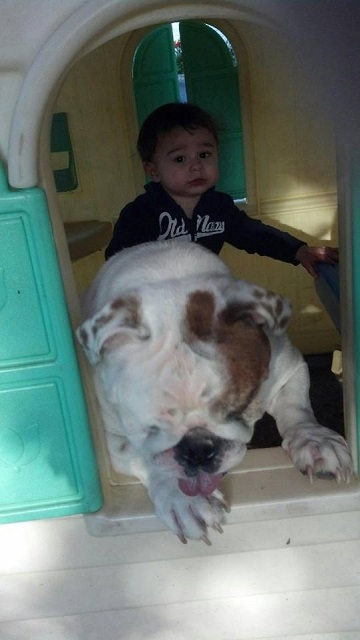
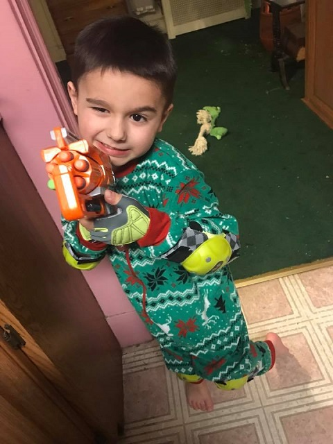
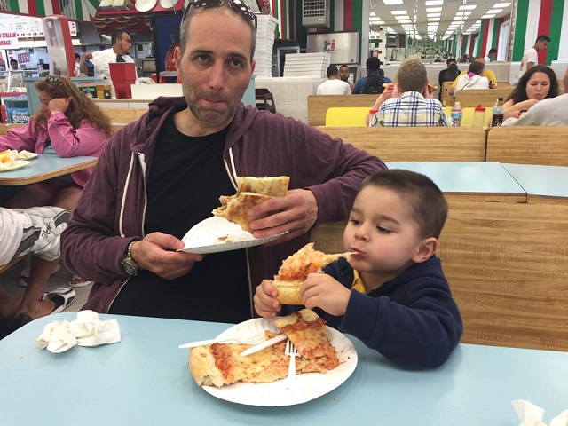
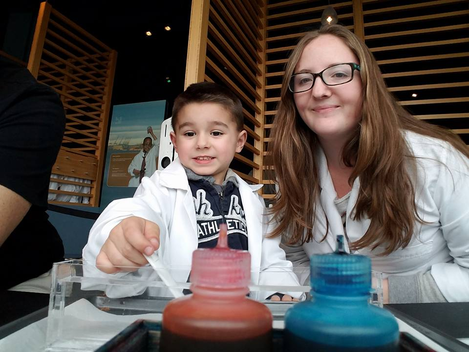
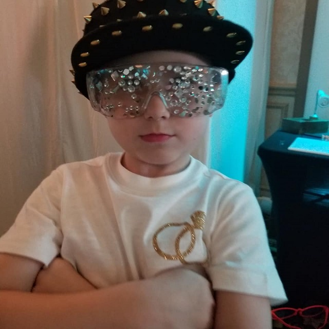

My Bio
I'd like to spend some time working at a small start up and help them build their brand name through a well designed site then move on to large company to manage a team of developers where we work with cutting edge tech.
I have worked with computers for over 20 years in hardware testing, system building, sales, and quality assurance.
Most recently I've been a chef at high end, farm-to-table restaurants and have worked in corporate events planning menus for executive parties. After returning to college I am working towards a degree in computer programming so that I return to the tech industry.
I decided to use pictures of my son Finnegan because he's quite photogenic.